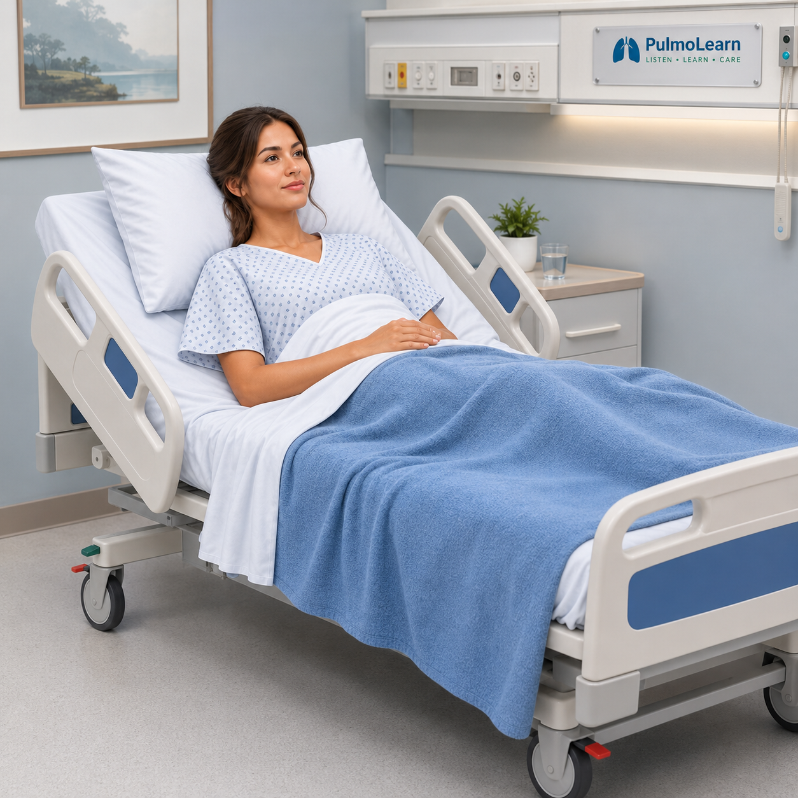

Practice the complete bedside routine: prepare, connect with the patient, obtain a manual blood pressure, select an appropriate temperature site, interpret the findings, and close the loop.
Teach
Teach
Build One Reliable Routine
The competency requires more than reading two numbers. Reliable vital signs depend on preparation, correct technique, patient context, and complete documentation.
1
PREPARE
Review, Gather, Clean
Verify the order and appropriateness, review the chart, gather the needed supplies, and perform hand hygiene and required isolation precautions.
2
CONNECT
Identify, Explain, Position
Introduce yourself, use two identifiers, explain the procedure, obtain permission to touch, and position the patient comfortably—preferably sitting with the head of bed elevated when appropriate.
3
BLOOD PRESSURE
Palpate First, Then Auscultate
Wrap deflated cuff snuglyPalpate brachial pulseInflate until pulse disappearsAdd 30 mmHgListen while slowly deflating
Clinical anchor: The first Korotkoff sound marks systolic pressure; disappearance of the sounds marks diastolic pressure.
4
TEMPERATURE
Choose the Site Before the Device
Determine an appropriate temperature site for the patient and situation. Apply a disposable sheath, turn on the thermometer, and obtain the measurement using the selected site.
5
CLOSE THE LOOP
Clean, Document, Report
Discard used supplies, clean the area and reusable equipment, remove PPE as indicated, perform hand hygiene, compare with prior measurements, and report abnormal findings to the appropriate health care provider.
Four-patient progression: Patient 1 is guided, Patient 2 is supported, Patient 3 reduces the hints, and Patient 4 expects you to complete the routine independently.
Patient 1 of 4PrepareGuided
Practice
Prepare Before Entering
Patient case

Equipment Tray
Select only the equipment you need for this competency encounter.